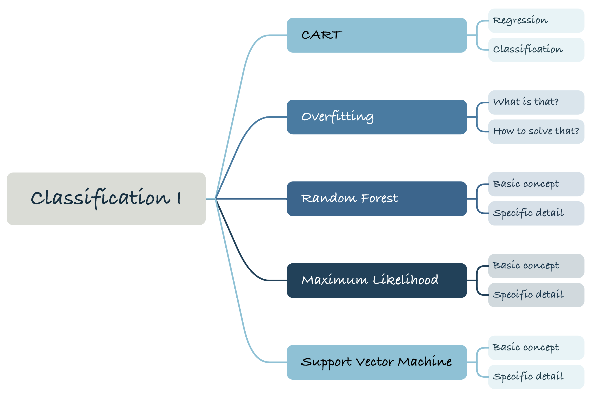
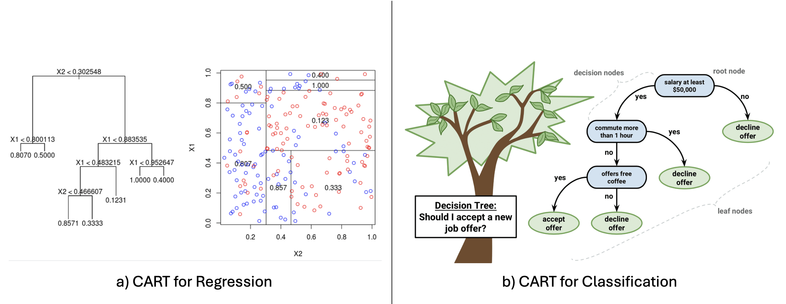
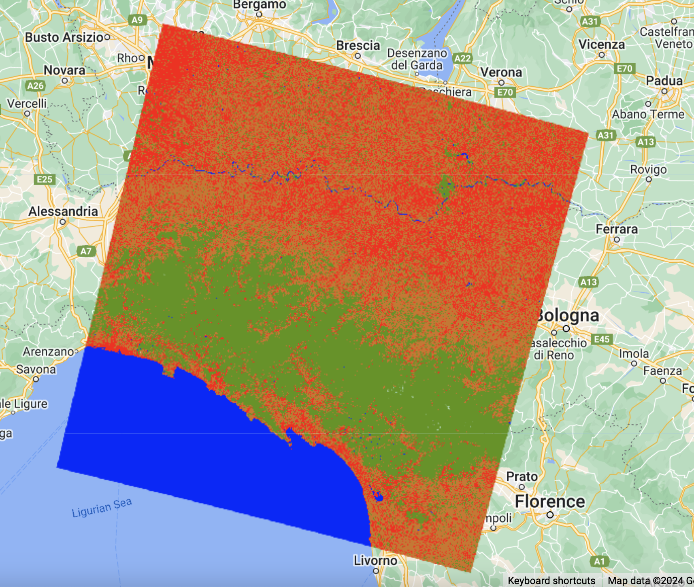
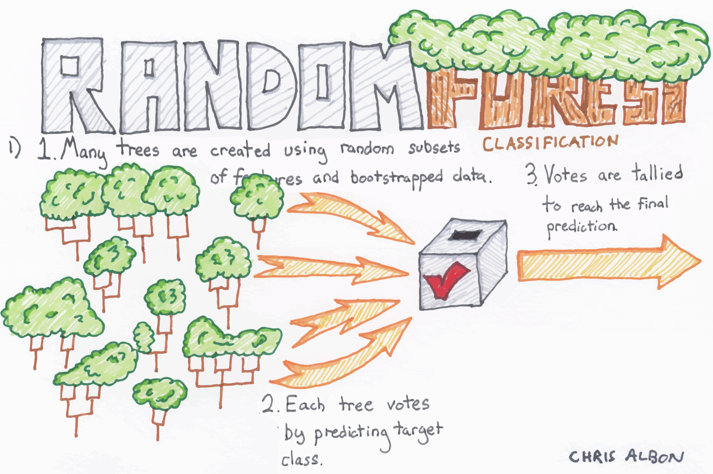
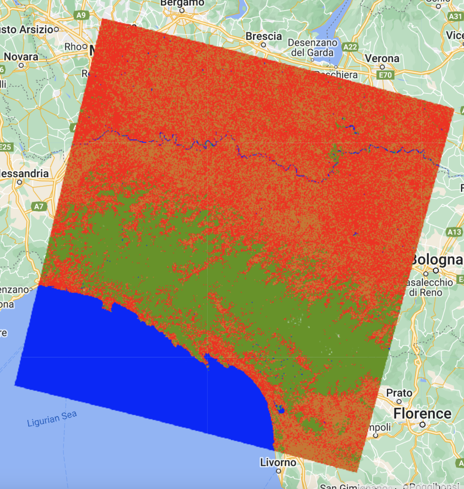
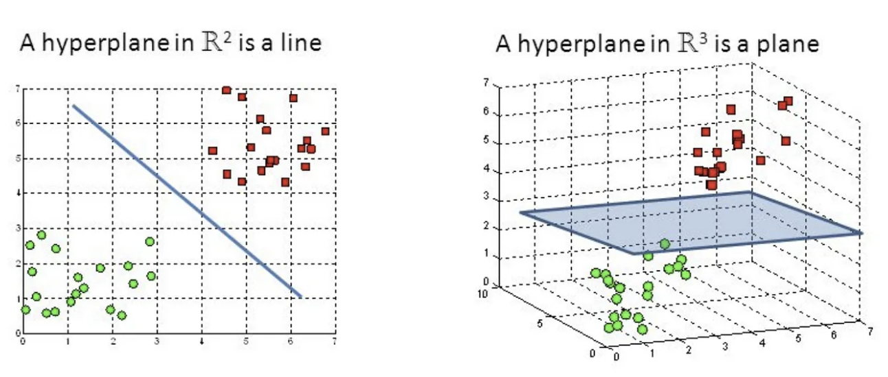
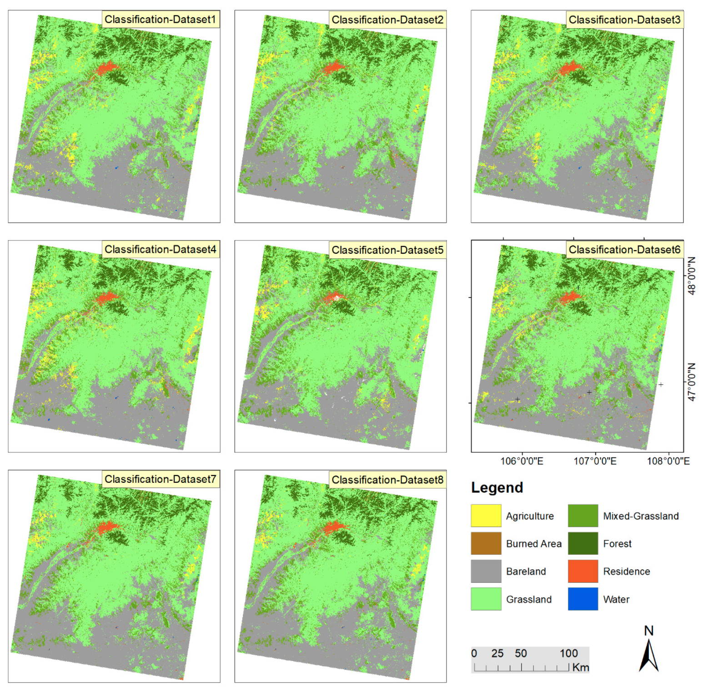
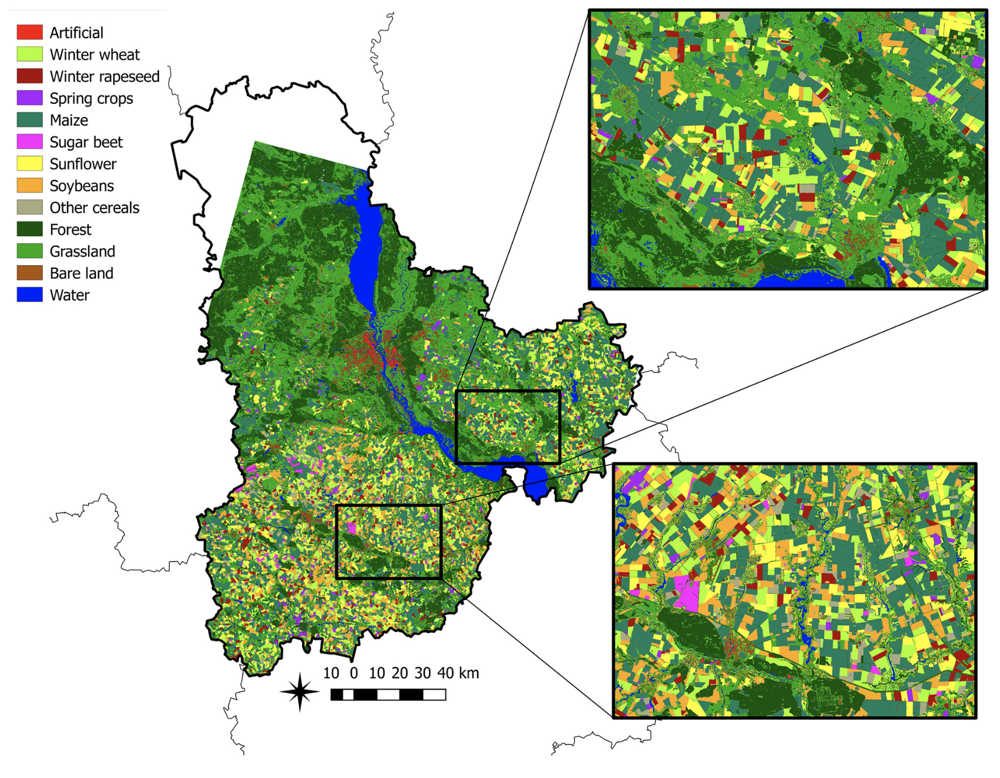

Week 07 Classification I
1. Summary

1.1 Classification and regression trees (CART)
 Source:Datacamp
Decision trees must be the first model to be proposed when referring to classification algorithms, whether in CASA0023 or CASA0006 (Data Science for Spatial Systems).CART is a predictive model that can be used for both classification and regression.
The basic steps of the CART algorithm are as follows:
First split the dataset into if two subsets based on an evaluation criterion (regression tree: MSE; classification tree: Gini impurity). Since the topic of this chapter is classification, the main summary is the classification purpose of CART. Gini impurity in my understanding is whether the data in the split sub-dataset are similar. If the data in the sub-datasets are all similar, or all of them are of one class, then such a split is successful.
Then repeat the splitting process until the stopping conditions are met (e.g., the maximum depth is reached, the evaluation criteria reaches a threshold).
Finally, to avoid overfitting, the complexity of the tree needs to be reduced by pruning. Usually there is a cost complexity parameter to control. In practice, this can be done through various packages, such as the ccp_alpha parameter in scikit-learn.
Below is an example of CART classification of land use in Milan using LANDSAT data: 
1.2 Overfitting
Overfitting is a common problem in machine learning, referring to models that perform well on training data but poorly on new, unseen data. Overfitting models learn the noise and errors in the training data, as well as overly complex patterns that don’t apply to new data.
In CART we can prevent overfitting by pruning, but in general we can choose to split the dataset into a training set and a test set. The test set provides a perspective on how the model performs on new data, as well as a way to determine if the model is starting to overfit the data in the training set. Additionally, my own previous use of machine learning algorithms has often included cross-validation to ensure that the model performs well on different subsets of data to assess the model’s ability to generalise. Or the risk of overfitting is reduced by some integration algorithm, such as random forests, which will be covered next.
1.3 Random Forest
 Source:JINSOL KIM
A random forest is, as its name suggests, an integrated model consisting of multiple CART. Each tree is trained on a different random subset of the dataset. In the classification task, each tree in the random forest produces a classification result, and then a voting mechanism is used to determine the final category.
Since the trees in a random forest are built independently, the overall model is less prone to overfitting, especially if there are enough trees and enough depth. And compared to XGBoost’s constant iteration of single-class trees, the parallel computation of random forests can save a lot of time.
Below is an example of CART classification of land use in Milan using LANDSAT data: 
I’ve tried to zoom in on the classification results as much as possible, and was able to make it relatively obvious (I guess) that Random Forest gives better results than CART, with a much finer level of classification.
1.4 Maximum Likelihood
The maximum likelihood method used to be a nightmare for me, as learning this algorithm as an undergraduate required hand-calculating the mathematical formulas behind it. Even though it has reappeared in my graduate studies, I am no longer afraid of it. The important part of this algorithm is that it requires the assumption that the probability distribution of each category over each feature is known, usually we assume a Gaussian distribution is satisfied. Then, the training data is used to estimate the statistical parameters for each category, i.e., the mean and covariance matrices. Next, for each pixel to be classified, the probability that it belongs to each category is calculated based on its features. Finally, the probabilities of each category are compared and the pixel is assigned to the category with the largest a posteriori probability. But I personally think there is a very fundamental problem with this algorithm, which is that this precondition that the a priori probability is known is too idealistic. Often, this condition cannot be met, and therefore I have rarely seen this algorithm in practice.
1.5 Support Vector Machine (SVM)
The core of a support vector machine is to find an optimal hyperplane that maximises the boundary between two types of data in a binary classification task. That is, maximising the distance from the training data points to this decision plane. When dealing with non-linearly divisible data, SVMs map the data to a higher dimensional space via a kernel function, as shown below. (A Gaussian kernel function is usually chosen when dimensioning; when the data is linearly differentiable, the kernel function is usually chosen as a linear kernel function.)
 Source:Rohith Gandhi
To avoid overfitting, SVMs introduce a concept of Soft Margin, which was mentioned in class as allowing misclassification to occur. But it is not explained in depth too much, so I would like to expand some information moderately in this small piece. Soft Margin classification is achieved by introducing so-called slack variables (ξ), one for each point. Since a data point has a slack variable of 0 if it is on the correct side and its distance from the hyperplane exceeds the interval, the SVM needs to not only maximise the interval but also minimise the slack variables. So how can this be done? This can be done by adding a regularisation term to the objective function, which is usually the sum of the values of the slack variables, multiplied by a regularisation parameter C. This parameter C is a hyperparameter, specified by the user. When C is large, the model is prone to overfitting; when C is small, the model is prone to underfitting. Therefore, the value of C is important in the process of tuning the parameter.
2. Application
Phan, Kuch and Lehnert (2020) used Landsat 8 surface reflectance (L8sr) data and a random forest algorithm on GEE to study land cover in the Mongolian region. The random forest algorithm provided a relatively high level of accuracy, with an overall accuracy of over 84.31 per cent.
 Source:Phan, Kuch and Lehnert, 2020
Shelestov et al. (2017) explored the efficiency of GEE for classifying multi-temporal satellite imagery for crop mapping, finding that while GEE provides good performance in terms of access and pre-processing, neural network-based approaches outperformed classifiers like random forest available in GEE.
 Source:Shelestov et al., 2017
When looking for applications of classification algorithms on GEE, I found that the vast majority of the research used more basic algorithms such as Random Forest or Gradient Tree Boosting. As Shelestov et al. suggest, neural networks are better at dealing with more complex problems, but it seems that GEE doesn’t directly provide built-in support for these types of models.However, GEE does seem to have an API option in the UI, so it may be possible to train models in external environments (deep learning frameworks such as TensorFlow, PyTorch, etc.) and then import them into GEE for use. This may be a future direction to improve the accuracy and robustness of remote sensing classification.
3. Reflection
Initially when I approached this class, I was curious about how I should classify images. Can a machine really tell what category a part of an image belongs to, just like the human eye? What I didn’t expect is that it really can. It turns out that images are also made up of pixels, and algorithms can classify them through computation or judgement. In the process of doing Practical, I found that it is really interesting to find a practical scenario for the theory I learnt before. What I learnt in theory was always that the Random Forest model is poorly interpretable, but in practice when I visualised the classification results, the results provided a lot of insights and were obvious. For me, in the future, I can consolidate the theory with practice.
In addition, GEE is a relatively new platform, and I didn’t find too many tutorials during the practical debugging process. Besides referring to the official website of GEE, the content provided by Olie in CASA0025 is also very helpful. Although I didn’t take that course, thanks to Olie for making the website public. From a certain point of view, learning is also a process of resource integration, combining different resources, always find a way to debug. In the future, I can also organise more and collect resources from different parties to help me learn.